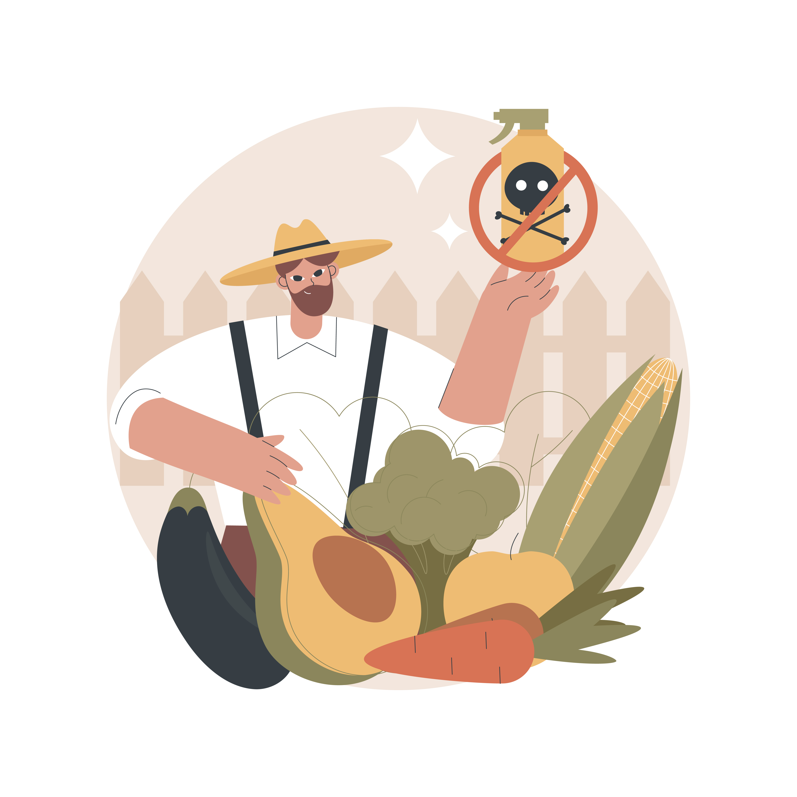

<!DOCTYPE html>
<html lang="pt-br">

<head>
    <meta charset="UTF-8">
    <meta http-equiv="X-UA-Compatible" content="IE=edge">
    <meta name="viewport" content="width=device-width, initial-scale=1.0">
    <link rel="stylesheet" href="reset.css">
    <link rel="stylesheet" href="style.css">
    <link rel="stylesheet" href="quemsomos.css">
    <link rel="icon" href="Imagens/icon.png">
    <link href="https://fonts.googleapis.com/css2?family=Raleway:wght@300;800&display=swap" rel="stylesheet">
    <link href="https://fonts.googleapis.com/css2?family=Style+Script&display=swap" rel="stylesheet">
    <link
        href="https://fonts.googleapis.com/css2?family=Mukta:wght@300&family=Open+Sans+Condensed:wght@300&display=swap"
        rel="stylesheet">
    <link href="https://fonts.googleapis.com/css2?family=Quicksand:wght@300;400;500;600;700&display=swap"
        rel="stylesheet">
    <link href="https://fonts.googleapis.com/css2?family=Kaisei+HarunoUmi&display=swap" rel="stylesheet">
    <link href="https://fonts.googleapis.com/css2?family=Satisfy&display=swap" rel="stylesheet">
    <title>Agroquímicos</title>
</head>

<body>
    <header class="header__header">
        <div class="header__div">
            
            <h1>Agroquímicos</h1>
        </div>

        <nav>
            <ul>
                <li class="nav__lista"><a href="paginainicial.html" class="nav__lista--inicio">Início</a></li>
                <li class="nav__lista"><a href="index.html" class="nav__lista--agrotoxicos">Agrotóxicos</a></li>
                <li class="nav__lista"><a href="quemsomos.html" class="nav__lista--quemsomos">Quem somos?</a></li>
                <li class="nav__lista"><a href="contatos.html" class="nav__lista--contatos">Contato</a></li>
            </ul>

        </nav>
    </header>

    <main>

        <section class="container__seção--titulo">
            <div class="seção__titulo--div">
                <h2 class="seção__titulo"> Agrotóxicos </h2>
            </div>
            <div>
                
            </div>
        </section>

        <section class="seçao__definiçao">
            <h3>O que são agrotóxicos?</h2>
                
                <p> Os agrotóxicos ou agroquímicos são compostos de substâncias químicas destinadas ao controle,
                    destruição
                    ou prevenção, direta ou indiretamente, de agentes patogênicos para plantas e animais úteis e às
                    pessoas.
                </p>
        </section>


        <section class="seçao__historia">
            <h3>Como surgiram os agrotóxicos?</h2>
                
                <p>A utilização em massa de agrotóxicos na agricultura se inicia na década de 1950, nos Estados Unidos,
                    com a chamada ‘Revolução Verde’, que teria o intuito
                    de modernizar a agricultura e aumentar sua produtividade. No Brasil, esse movimento chega na década
                    de 1960 e, com a implantação do Programa Nacional de Defensivos Agrícolas (PNDA), ganha
                    impulso na década de 1970. O programa vinculava a utilização dessas substâncias à concessão de
                    créditos agrícolas, sendo o Estado um dos principais incentivadores dessa prática</p>
        </section>

        <section class="seçao__utilizaçao">
            <h3>Agroquímicos na Agricultura e no Brasil</h2>
                
                <p>A utilização em massa de agrotóxicos na agricultura se inicia na década de 1950, nos Estados Unidos,
                    com a chamada ‘Revolução Verde’, que teria o intuito
                    de modernizar a agricultura e aumentar sua produtividade. No Brasil, esse movimento chega na década
                    de 1960 e, com a implantação do Programa Nacional de Defensivos Agrícolas (PNDA), ganha
                    impulso na década de 1970. O programa vinculava a utilização dessas substâncias à concessão de
                    créditos agrícolas, sendo o Estado um dos principais incentivadores dessa prática</p>
                    Atualmente, o Brasil ainda possui políticas públicas que fomentam o uso e o comércio de agrotóxicos
                    mantidas pela influência da bancada ruralista no Congresso Nacional. Exemplos disso são o custo
                    irrisório de registro
                    de produtos na Agência Nacional de Vigilância Sanitária (Anvisa) (de R$ 180,00 a R$ 1.800,00)
                    e a isenção, na maioria dos estados, do Imposto sobre a Comercialização de Mercadorias e
                    Serviços (ICMS). Segundo Jobim et al.3, essa tecnologia agrícola, porém, ao mesmo tempo
                    que gera crescimento econômico, provoca riscos ao meio ambiente e à saúde humana.
                    A agricultura no Brasil avança a cada ano, e,
                    atualmente, o País é um dos principais produtores agrícolas do mundo. Já em 2006, contava
                    com 5,17 milhões de empresas agropecuárias.
                    Na última década, o Brasil expandiu em
                    190% o mercado de agrotóxicos, o que colocou
                    o País em primeiro lugar no ranking mundial de
                    consumo desde 2008. Dez empresas controlam mais de 70% desse mercado no País. Somente
                    na safra de 2010 e 2011, foram consumidas 936
                    mil toneladas de agrotóxicos.
        </section>

        <section class="seçao__impacto">
            <h3>Efeitos dos agrotóxicos</h2>
                
                <p>Um estudo feito em 2016 identificou a presença de Dicloro-Difenil-Tricloroetano (DDT) em
                    solo, e outros abordaram que a rápida dissipação dos agrotóxicos nos solos e nas águas
                    e o seu poder de escoamento também devem ser levados em consideração para a discussão do impacto
                    desses venenos sobre o meio
                    ambiente, podendo contaminar águas de rios e mares. Outras substâncias, como o benalaxil, podem se
                    dissipar com a ajuda
                    da degradação da própria microbiota aquática. O número e o tamanho de estômatos em plantas podem
                    ser influenciados pela
                    presença de agrotóxicos na área de plantio. Agrotóxicos podem contaminar reservatórios de água,
                    rios, recursos hídricos e bacias fluviais, podendo interferir nos organismos vivos aquáticos. Algumas substâncias já
                    proibidas há décadas no País, como é o caso do Hexaclorociclohexano (HCH), ainda estão sendo
                    detectadas em amostras de águas, poços e mananciais. </p>
        </section>

        <!-- 
         -> historico
         -> tipos de agrotoxicos(classificação)
         -> 
        -->

    </main>

    <footer>

        <a href="https://www.ifms.edu.br/" target="blank">
            
        </a>
        <div class="footer__div">
            <p class="footer__creditos"> Feito para a disciplina de Desenvolvimento Web 1 e Química 5
                |
                Novembro de 2021 </br> </p>
            <p class="footer__creditos--freepik">Icons made by <a href="https://www.freepik.com"
                    title="Freepik">Freepik</a> from <a href="https://www.flaticon.com/"
                    title="Flaticon">www.flaticon.com</a></p>

            <p class="footer__creditos--copyright"> © Todos os direitos reservados</p>
        </div>

    </footer>

</body>

</html>